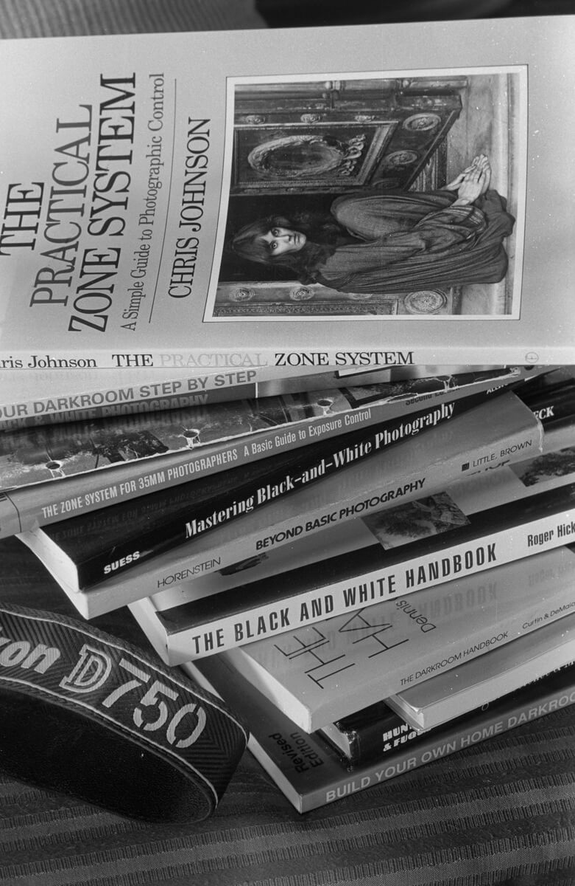

胶卷的 ISO 到底该设多少？设错一次，这一卷就废了
你拍废的第一卷，很可能不是因为构图，也不是因为对焦——是因为机身那个 ISO 拨盘，你压根没动过，或者动错了。
这一篇只讲一件事：ISO 到底该设多少。 它比你想的简单，也比你想的重要——因为设错一次，整卷就白拍了。
一、先分清两件常被搞混的事
很多人把「胶卷的 ISO」和「机身的 ISO」当成一回事。其实它们是两个东西：
所以「设错 ISO」的真实后果是：测光表按错误的感光度算曝光，导致整卷系统性欠曝或过曝。 而不是「胶片变成了另一个感光度」。
二、老相机最容易骗你：装好卷一定要手动设 ISO
这是新手最常踩的坑，而且很多相机不会提醒你：
所以装卷的时候，养成一个动作：装完先看 ISO 拨盘对不对。 这一秒钟能救你一整卷。
顺带说一句：老相机的测光表本身也常常不准（尤其用了几十年的硒光电池或老化的 CdS 测光）。所以它给的数值，只能当参考，不能当圣旨。
三、最关键的一张表：三种胶卷的宽容度差多少
为什么「设错 ISO」有时能救、有时不能救？取决于你用的是哪种卷。
| 类型 | 过曝能不能救 | 欠曝能不能救 |
|---|---|---|
| 彩色负片 | ✅ 过曝 1–2 档通常还能救 | ⚠️ 明显更糟：暗部会变成一片没有信息的灰 |
| 反转片 / 正片 | ⚠️ 极窄，基本按标称 | ❌ 基本没救 |
| 黑白卷 | ✅ 宽容度最大 | ✅ 还能靠延长显影「迫冲」救回来 |
记住这个规律：彩负怕欠曝、反转片怕全怕、黑白最皮实。
所以对新手来说，「宁可稍微过曝，也不要欠曝」 在彩负上基本是对的；但换成反转片，这条就不适用了——反转片只能老实按标称拍。

四、伸手就能用的对照表（直接照抄）
下面这张是实战用的，不是理论值：
| 场景 | 彩色负片 | 黑白卷 | 反转片 |
|---|---|---|---|
| 光线好、有把握 | 标称（400 就是 400） | 标称 | 标称 |
| 心里没底、怕欠曝 | 降一档（按 200 拍） | 降一档 | 别乱动 |
| 逆光、雪地、大太阳 | 降一档（容易欠曝） | 降一档 | 标称 + 小心 |
| 弱光、室内、夜晚 | 照标称，接受颗粒 | 照标称，考虑迫冲 | 不建议 |
| 想更大颗粒 / 更高反差 | 不建议 | 升一档迫冲（400→800） | 不建议 |
「降一档」是什么意思：胶卷是 ISO 400，你把机身拨盘设成 200。这等于告诉相机「这卷更不敏感」，相机会给更多曝光 → 画面更亮、暗部更厚。
⚠️ 注意：这样拍，冲洗时不需要任何特殊处理（彩负和黑白都可以正常冲）。只有「升一档/迫冲」才需要在冲洗时延长时间。 这两件事别搞混。
五、测光到底测哪里：一个动作决定成败
这条规律说起来反直觉，但很好记：测光表永远想把画面拉成「中灰」。画面本身很白，它就要压暗；画面本身很黑，它就要提亮。你要做的，是把它拉回来。

六、没有测光表怎么办：晴天 16 法则
胶片时代的老办法，到现在依然好用 —— 晴天 16 法则：
这套法则不需要电池，也不会坏。 老相机测光失灵的时候，它就是你唯一的依靠 —— 而且练熟之后，你对光的判断会比机器更准。
七、三个最容易白费一卷的习惯
构图画面的好坏，决定这张照片好不好看；ISO 设对没设对，决定这卷底片还在不在。
八、一句话总结
「机身 ISO 设成胶卷标称值」是默认答案，也是 90% 情况下的正确答案。 只有在两种情况才偏离它：
除此之外，别乱动它。相机的宽容度没有胶卷大，胶卷的宽容度没有你的经验大 —— 先把标称值拍好，再谈玩花样。
数据来源
本文综合公开社区经验与厂商资料整理（Sunny 16 法则、Rangefinder 论坛关于老相机测光与过曝讨论、Ilford/Harman 关于黑白胶片迫冲的公开技术说明）。曝光宽容度是经验值，不同乳剂与冲洗条件差异很大，请以自己实拍为准。
你在哪一步错过曝光？
留言说说你最容易错的场景（逆光？雪地？室内？），以及后来怎么修正的 —— 让后面的人少费一卷。
这几卷对曝光失误比较宽容
Tri-X 400（最皮实的万能卷） XP2 Super（宽容度极大的 C-41 黑白） T-Max P3200（ISO 3200，弱光专用） T-Max 100（细腻但挑曝光）
去胶卷库看看这几卷
「胶卷档案」是一个可搜索的胶卷资料库：每卷都有规格、特性、使用感受、参考价与实拍样片。搜品牌或型号就能直达。